print(1 + 2)3En esta unidad vamos a centrarnos en la herramienta que vamos a emplear, que es Python. Vamos a hacer un programa sencillo, interactuar con el usuario y más.
El flujo de control de un programa es la forma en la que se ejecutan las instrucciones de un programa. En Python, el flujo de control es secuencial, es decir, se ejecutan las instrucciones una detrás de otra.
Ejemplo:
Esta línea se ejecutaría primero ↓
Esta línea se ejecutaría después ↓
Esta línea se ejecutaría a lo último En este curso, la comunicación de los programas con el mundo exterior se realizará casi exclusivamente con el usuario por medio de la consola (o terminal, la presentamos en la unidad anterior en el anexo de Colab).
Esto no significa que todos los programas siempre se comuniquen con el usuario para todo. Pensemos en las aplicaciones que usamos generalmente, como instagram: imaginémonos si para cada acción que hiciéramos dentro de la app la misma nos preguntara si queremos hacerlo o no:
- “¿Estás seguro/a de que querés iniciar sesión?”
- “¿Estás seguro/a de que querés traer tu nombre de usuario para mostrarse en el perfil?”
- “¿Estás seguro/a de que querés traer tu foto de usuario para mostrarse en el perfil?”
Sería extremadamente molesto. Uno simplemente inicia sesión, y hay un montón de cosas y procesos que se ejecutan uno detrás de otro, automáticamente.
Hay cosas que no necesitan de la interacción del usuario. Nosotros nos vamos a centrar en la interacción con el usuario en gran parte del curso, pero no es lo único que se puede hacer. Los programas pueden comunicarse con otros programas y las partes de un mismo programa pueden comunicarse con otras partes del mismo programa. Más adelante vamos a ver un poco más de esta diferencia.
Si tenemos la operación 7 * 5, sabemos que el resultado es 35. Decimos que tanto 7, 5 como 35 son valores. En los lenguajes de programación, cada valor tiene un tipo.
En este caso, 7, 5 y 35 son enteros (o integers en inglés). En Python, los enteros se representan con el tipo int.
Python tiene dos tipos de datos numéricos:
Los números enteros representan un valor entero exacto, como 42, 0, -5 o 10000.
Los números de punto flotante tienen una parte fraccionaria, como 3.14159, 1.0 o 0.0.
Según los operandos (los valores que se operan) y el operador (el símbolo que indica la operación), el resultado puede ser de un tipo u otro. Por ejemplo, si tenemos 7 / 5, el resultado es 1.4, que es un número de punto flotante. Si tenemos 7 + 5, el resultado es 12, que es un número entero.
print(1 + 2)3print es una función de Python que nos deja imprimir cosas por pantalla. Al hacer print(1+2), Python está calculando el resultado de 1+2 e imprimiéndolo para que podamos verlo.
Vamos a elegir usar enteros cada vez que necesitemos recordar, almacenar o representar un valor exacto, como pueden ser por ejemplo: la cantidad de alumnos, cuántas veces repetimos una operación, un número de documento, etc.
Vamos a elegir usar números de punto flotante cada vez que necesitemos recordar, almacenar o representar un valor aproximado, como pueden ser por ejemplo: la altura o el peso de una persona, la temperatura de un día, una distancia recorrida, etc.
print(0.1 + 0.2)0.30000000000000004Como vemos, cuando hay números de punto flotante, el resultado es aproximado. 0.1 + 0.2 nos debería dar 0.3, pero nos da 0.30000000000000004. Esto es porque los números de punto flotante son aproximados, y no pueden representar todos los valores de forma exacta. Esto es algo que vamos a tener que tener en cuenta cuando trabajemos con números de punto flotante.
Notemos que para representar números de punto flotante, usamos el punto (.) y no la coma (,). Esto es porque en Python, la coma se usa para separar valores, como vamos a ver más adelante.
Además de efectuar operaciones matemáticas, Python nos permite trabajar con porciones de texto, que se llaman cadenas (o strings en inglés). Las cadenas se representan con el tipo str.
Las cadenas se escriben entre comillas simples (') o dobles (").
print( "¡Hola!" )¡Hola!print( '¡Hola!' )¡Hola!Las cadenas también tienen operaciones disponibles, como por ejemplo la concatenación, que es la unión de dos cadenas en una sola. Esto se hace con el operador +.
print( "¡Hola!" + " ¿Cómo estás?" )¡Hola! ¿Cómo estás?Vamos a ver más de estas operaciones más adelante.
Python nos permite asignarle un nombre a un valor, de forma tal que podamos “recordarlo” y usarlo más adelante. A esto se le llama asignación.
Estos nombres se llaman variables, y son espacios de memoria donde podemos almacenar valores.
La asignación se hace con el operador = de la siguiente forma: <nombre> = <valor o expresion>.
Ejemplos: Vamos a guardar el valor 5 en la variable x. Luego, vamos a sumarle 2 y guardarlo en la variable y.
x = 5y = x + 2print(y)7print(y * 2)14lenguaje = "Python"
texto = "Estoy programando en " + lenguaje
print(texto)Estoy programando en PythonEn este ejemplo, creamos las siguientes variables:
y las asociamos a los valores 5, 7, “Python” y “Estoy programando en Python” respectivamente. Luego podemos usar esas variables como parte de cualquier expresión, y en el momento de evaluarla, Python reemplazará las variables por su valor asociado.
Si el dato es inmutable (no puede cambiar) durante la ejecución del programa, se dice que ese dato es una constante. Si tiene la habilidad de cambiar, se dice que es una variable. En Python, todas las variables son mutables, es decir, pueden cambiar su valor durante la ejecución del programa.
Y no sólo pueden cambiar su valor, sino también su tipo: x = 5 y x = "Hola" son dos asignaciones válidas, y se pueden hacer una debajo de la otra:
x = 5
x = "Hola"
print(x)HolaNo se puede usar el mismo nombre para dos datos diferentes a la vez; una variable puede referenciar un sólo dato por vez. Si se usa un mismo nombre para un dato diferente, se pierde la referencia al dato anterior.
Para poder realizar algunas operaciones particulares, necesitamos introducir el concepto de función. Una función es un bloque de código que se ejecuta cuando se la llama.
Es un fragmento de programa que permite efectuar una operación determinada. abs, print, max son ejemplos de funciones de Python: abspermite calcular el valor absoluto de un número, print permite mostrar un valor por pantalla y max permite calcular el máximo entre dos valores.
Una función puede recibir cero o más parámetros o argumentos, que son valores que se le pasan a la función entre paréntesis y separados por comas, para que los use.
abs(-5)5print("¡Hola!")¡Hola!max(5, 7)7La función recibe los parámetros, efectúa una operación y devuelve un resultado.
Python viene equipado de muchas funciones predefinidas, pero nosotros como programadores debemos ser capaces de escribir nuevas instrucciones para la computadora. Las grandes aplicaciones como el correo electrónico, navegación web, chat, juegos, etc. no son más que grandes programas implementados introduciendo nuevas funciones a la máquina, escritas por uno o más programadores.
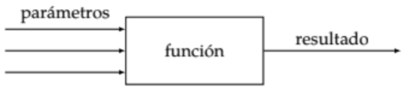
Python es Case Sensitive, es decir, distingue entre mayúsculas y minúsculas.
Es muy importante respetar mayúsculas y minúsculas: PRINT() o prINT() no serán reconocidas. Esto aplica para todo lo que escribamos en nuestros programas.
Si queremos crear una función que nos devuelva un saludo a Lucia cada vez que se la llama, debemos ingresar el siguiente conjunto de líneas en Python:
def saludar_lucia():
return "Hola, Lucia!"Podés copiar el código y pegarlo en Colab. Luego, apretá “Run”. Vas a notar que no pasa nada, ahora vamos a ver por qué.
Varias cosas a notar del código:
saludar_lucia es el nombre de la función. Podría ser cualquier otro nombre, pero es una buena práctica que el nombre de la función describa lo que hace.def es una palabra clave que indica que estamos definiendo una función.return indica el valor que devuelve la función. Es decir, el resultado. Puede devolverse una sola cosa, como en este caso, o varias cosas separadas por comas.La sangría puede ingresarse utilizando dos o más espacios, o presionando la tecla Tab. Es importante prestar atención en no mezclar espacios con tabs, para evitar “confundir” al intérprete (en nuestro caso, Colab).
La firma de una función es la primera línea de la misma, donde se indica el nombre de la función y los parámetros que recibe. Así como la firma de una persona permite identificarla de otra, la firma de una función permite identificarla y diferenciarla de otra.
Como vimos más arriba, el bloque de código anterior no hace nada. Para que la función haga algo, tenemos que llamarla. Para llamar a una función, escribimos su nombre, seguido de paréntesis y los parámetros que recibe (si es que recibe alguno), separados por comas.
saludar_lucia()Se dice que estamos invocando o llamando a la función. Y al invocar una función, se ejecutan las instrucciones que habíamos escrito en su cuerpo.
Pero de nuevo, vemos que no pasa nada. ¿Por qué? Porque la función usa return para devolver un valor. Pero nosotros no estamos haciendo nada con ese valor. Para poder verlo, tenemos que imprimirlo por pantalla.
saludo = saludar_lucia()
print(saludo)Hola, Lucia!Lo que hicimos fue asignar el resultado devuelto por saludar_lucia a la variable saludo, y luego imprimir el valor de la variable por pantalla (aunque el paso de guardado es opcional, podríamos imprimirlo directamente).
Bueno, ahora podemos saludar a Lucia. Pero vamos a querer saludar a otras personas también. ¿Tiene sentido hacer una función por cada persona? No, porque tendríamos muchas funciones (llamadas por ejemplo saludar_lucia, saludar_mariana, saludar_emilia, etc) que básicamente hacen lo mismo: saludar a alguien.
Una de las características de una función es que sea una solución reutilizable a un problema. En nuestro caso, queremos saludar personas.
¿Cómo hacemos entonces? Podemos hacer una función que reciba el nombre de la persona a saludar como parámetro. Un parámetro es un valor necesario para la ejecución de la función. En nuestro caso, indica a quién vamos a saludar:
def saludar(nombre):
return "Hola, " + nombre + "!"De esta forma, podemos saludar a cualquier persona, pasando su nombre como parámetro.
# Esta es otra forma de imprimir, sin necesidad de guardarnos
# el resultado de la función en una variable,
# simplemente la imprimimos
print(saludar("Lucia"))Hola, Lucia!print(saludar("Serena"))Hola, Serena!¿Qué significa que una función devuelva o retorne algo?
Que una función devuelva o retorne algo, significa que no se está encargando de mostrar el resultado en pantalla. Pero, ¿está haciendo algo si no lo puedo ver en pantalla? Por supuesto, hay muchas cosas que ocurren “por detrás”, sin que nos demos cuenta, en una computadora. Si nosotros llamamos a la función saludar pasándole un nombre de esta forma saludar("Serena"), la función está armando el saludo y devolviéndolo, aunque nosotros no estemos viendo nada en la pantalla. Incluso si lo guardáramos en una variable (saludo = saludar("Serena")), también se está ejecutando y la variable saludo está almacenando el saludo, por más de que no veamos eso en ningún lado. La gran mayoría de las funciones van a retornar valores calculados, pero no van a ser responsables de mostrarlos en pantalla. Eso es algo que vamos a tener que ocuparnos por fuera, si quisiéramos ver el resultado.
Ejemplo
Escribir una función que calcule el doble de un número.
def obtener_doble(numero):
return numero * 2Para invocarla, debemos llamarla pasándole un número:
doble = obtener_doble(5)
print(doble)10Ejemplo
Pensá un número, duplícalo, súmale 6, divídelo por 2 y resta el número que elegiste al comienzo. El número que queda es siempre 3.
def f(numero):
return ((numero * 2) + 6) / 2 - numeroprint(f(5))3.0Hasta ahora, los programas que hicimos no interactuaban con el usuario. Pero para que nuestros programas puedan interactuar, vamos a querer que el usuario pueda ingresar datos, y que el programa pueda mostrarle datos por pantalla. Para esto, vamos a usar la función input.
input()Input es una función que bloquea el flujo del programa, esperando a que el usuario ingrese una entrada por consola y presione enter. Cuando el usuario presiona enter, la función devuelve el valor ingresado por el usuario.
input()
print("terminé!")Si corremos el bloque de código anterior (te recomendamos que lo hagas), vamos a tener un comportamiento como este:
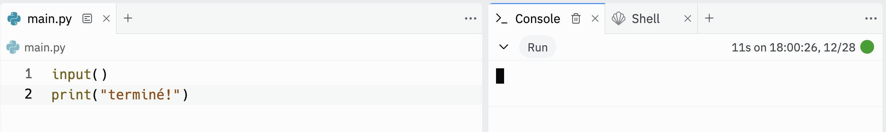
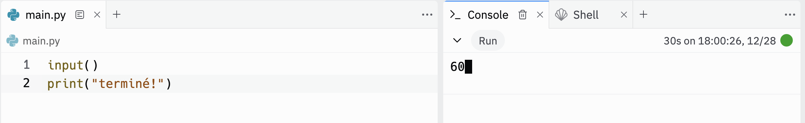
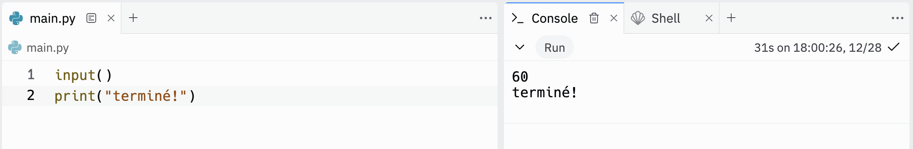
Como dijimos más arriba, la función input devuelve el valor ingresado por el usuario. Para poder usarlo, tenemos que guardarlo en una variable.
nombre = input()
print("Hola, " + nombre + "!")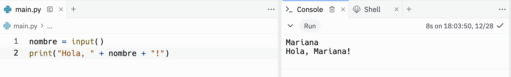
Para hacer nuestro programa más amigable, podemos mostrarle al usuario un mensaje antes de pedirle que ingrese un valor. Para esto, podemos pasarle un parámetro a la función input, que es el mensaje que queremos mostrarle al usuario.
nombre = input("Ingresá tu nombre: ")
print("Hola, " + nombre + "!")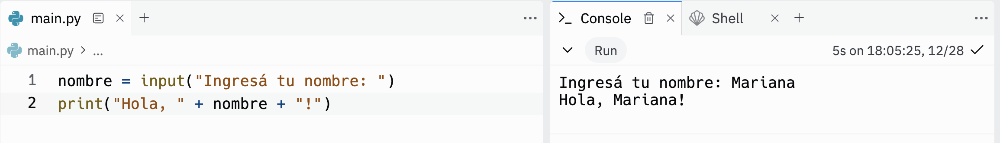
A partir de la guía 2, a menos que el ejercicio diga específicamente “pedirle al usuario”, no se debe usar input, sino que todo tiene que recibirse por parámetro en la función.
Lo mismo con print: A menos que el ejercicio diga específicamente “imprimir”, todo siempre se tiene que devolver con un return.
Los comentarios son líneas que se escriben en el código, pero que no se ejecutan. Sirven para que el programador pueda dejar notas en el código, para que se entienda mejor qué hace el programa.
Los comentarios se escriben con el símbolo #. Todo lo que esté a la derecha del # no se ejecuta. También se pueden encerrar entre tres comillas dobles (""") para escribir comentarios de varias líneas.
# Esto es un comentario
""" Esto es un comentario
de varias líneas """No es correcto escribir comentarios que no aporten nada al código, o tener el código absolutamente plagado de comentarios. Los comentarios deben ser útiles, y deben aportar información que no se pueda inferir del código. Nuestro primer intento de hacer el código más entendible no tienen que ser los comentarios, sino mejorar el código en sí.
Para nombres de variables y funciones, en Python se usa snake_case, que es básicamente dejar todas las palabras en minúscula y unirlas con un guión bajo. Ejemplos: numero_positivo, sumar_cinco, pedir_numero, etc. Siempre emplear un nombre que nos remita al significado que tendrá ese dato, siempre en snake_case: numero, letra, letra2, edad_hermano, etc.
Las variables son cosas. Entonces sus nombres son sustantivos: nombre, numero, suma, resta, resultado, respuesta_usuario. La única excepción son las variables booleanas (ya las vamos a ver, son aquellas que pueden guardar dos posibles valores: verdadero o falso), que suelen tener nombres como es_par, es_cero, es_entero, porque su valor es true o false.
A veces es útil alguna frase para identificar mejor el contenido:
edad_mayor_hijo, apellido_conyuge
Las funciones hacen algo. Entonces sus nombres son verbos. Se usan siempre verbos en infinitivo (terminan en -ar, -er, -ir): calcular_suma, imprimir_mensaje, correr_prueba, obtener_triplicado, etc.
De nuevo, las excepciones son las funciones que devuelven un valor booleano (V o F). Esas pueden llamarse como: es_par, da_cero, tiene_letra_a, porque devuelven verdadero o falso, y eso nos confirma o niega la afirmación que hace el nombre.
Cuando uno corre Python, lo que hace el lenguaje es leer línea a línea nuestro código. Lo que se puede ejecutar, lo ejecuta. Las funciones las guarda en memoria para poder usarlas luego.
Entonces es más ordenado y prolijo primero poner todas las funciones, y después el código “ejecutable” (si van a dejar código suelto en el archivo, cosa que en general no se suele recomendar).
Además, no olvidemos que Python tiene un flujo de control de arriba para abajo. Si intentamos invocar funciones antes de que estén definidas (def), Python no va a saber qué hacer, y nos va a tirar un error.
Esto es correcto: 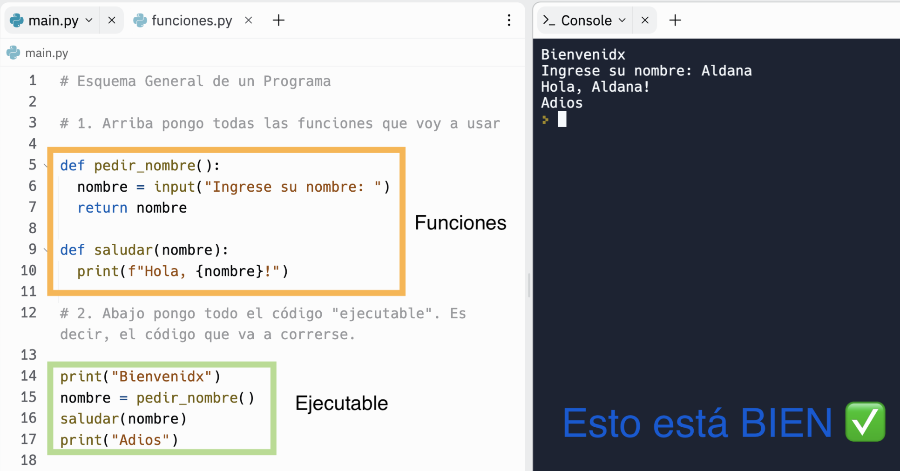
Esto es incorrecto: 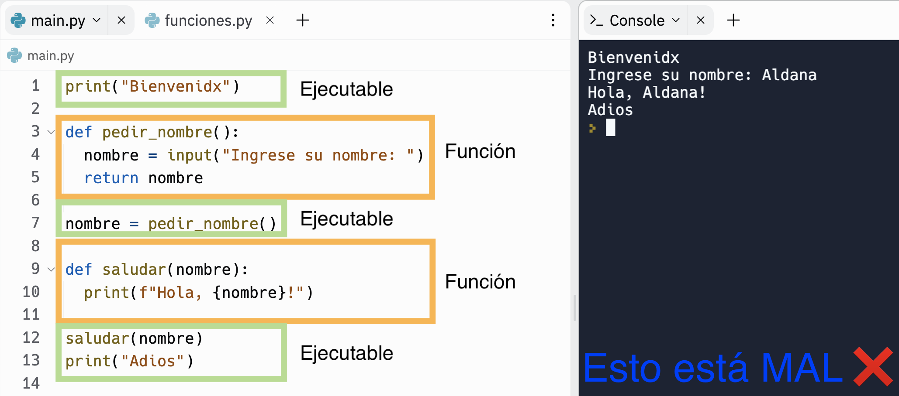
Una función se puede pensar como una caja cerrada o una fábrica. La función tiene dos puertas: una de entrada y una de salida.
La puerta de entrada son los parámetros y la de salida es el output (el resultado).
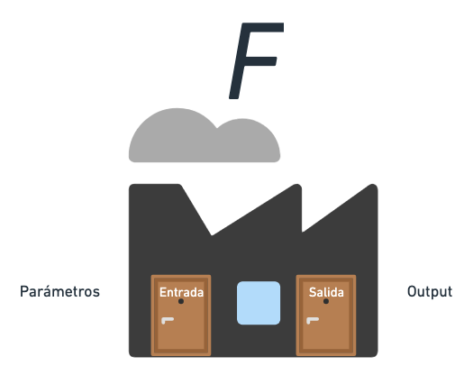
Cuando se llama o invoca a la función, la puerta de entrada se abre, permitiéndonos enviarle (pasarle) cero, uno o más parámetros a la función (según cómo esté definida). Los parámetros son datos que la función necesita para funcionar, y como ya dijimos, se le pasan a la misma entre los paréntesis de la llamada.
Ejemplo:
saludar(nombre),imprimir_elementos(lista),sumar(numero1, numero2), etc.
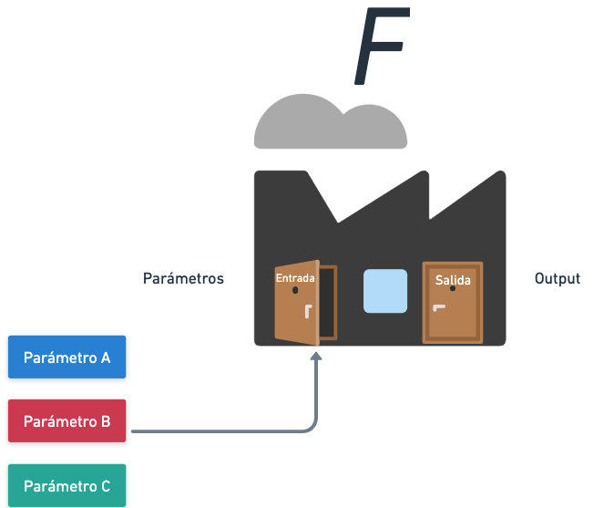
Una vez que la función se empieza a ejecutar, ambas puertas se cierran. Esto quiere decir que, mientras la función se está ejecutando, nada entra y nada sale de la misma.
La función debería trabajar únicamente con los datos que se le hayan pasado por parámetro o que se le pidan al usuario dentro de ella, pero no debería utilizar nada que esté por fuera de la misma.
Python nos deja usar cosas por fuera de la función y sin recibir los datos por parámetro, porque es un lenguaje muy benevolente. Pero está mal usar cosas que no se hayan recibido por parámetro: es una mala práctica.
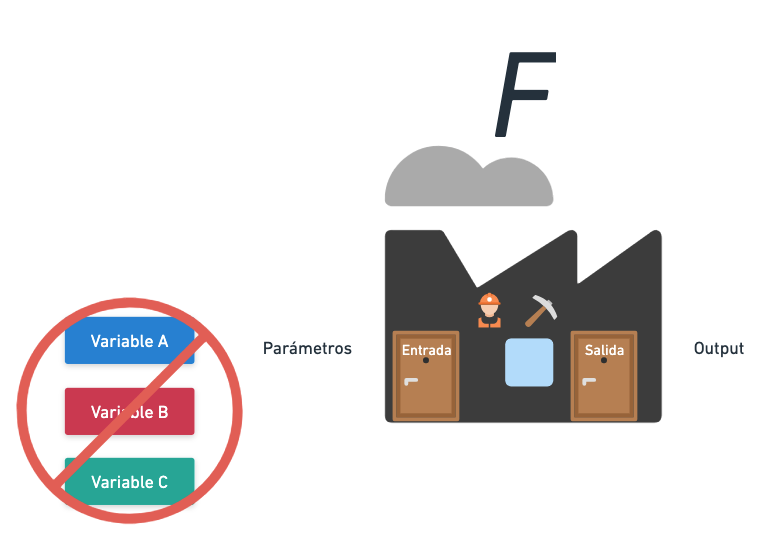
Una vez que la función terminó de ejecutarse, el o los valores de salida (resultados) se devuelven por el output. Una función puede retornar uno o más elementos, o podría simplemente no retornar nada.
return suma, return numero1, numero2, return, etc.
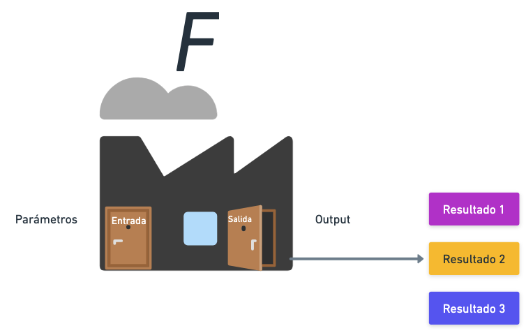
Podemos ver la diferencia entre enviar algo por parámetro y usarlo por fuera de la función a continuación:
| Esto está mal | Esto está bien |
|---|---|
|
|
Como podemos observar los nombres de los argumentos cuando se invoca y en la definición de la firma pueden ser los mismos o distintos. En este caso, la función sabe que está recibiendo algo como parámetro, y sabe que dentro de su cuerpo a este dato lo va a identificar como persona, pero no hace falta que la variable que nosotros le pasamos como parámetro también se llame persona: en este caso se llama nombre.
Los programas trabajan con una gran variedad de datos. Los datos más simples son los que ya vimos: números enteros, números de punto flotante y cadenas.
Pero dependiendo de la naturaleza o el tipo de información, cabrá la posibilidad de realizar distintas transformaciones aplicando operadores. Por eso, a la hora de representar información no sólo es importante que identifiquemos al dato y podamos conocer su valor, sino saber qué tipo de tratamiento podemos darle.
Todos los lenguajes tienen tipos predefinidos de datos. Se llaman predefinidos porque el lenguaje ya los conoce: sabe cómo guardarlos en memoria y qué transformaciones puede aplicarles.
En Python, tenemos los siguientes tipos de datos:
| Tipo | Descripción | Ejemplo |
|---|---|---|
int |
Números enteros | 5, 0, -5, 10000 |
float |
Números de punto flotante o reales | 3.14159, 1.0, 0.0 |
complex |
Números complejos | (1, 2j), (1.0,-2.0j), (0,1j). La componente con j es la parte imaginaria. |
bool |
Valores booleanos o valores lógicos | True, False |
str |
Cadenas de caracteres | "Hola", "Python", "¡Hola, mundo!", "" (cadena vacía, no contiene ningún caracter) |
Porque son una cadena de caracteres, es decir, una secuencia de caracteres. Por ejemplo, la cadena “Hola” está formada por los caracteres “H”, “o”, “l” y “a”. Esto nos permite acceder a cada uno de los caracteres de la cadena por separado si quisiéramos, o a porciones de una cadena, como vamos a ver más adelante.
Más aún, podemos ver que el texto “hola” no será igual a “aloh” ni a “Holá”, porque son cadenas distintas.
Un string permite almacenar cualquier tipo de caracter unicode dentro (letras, números, símbolos, emojis, etc.).
Los operadores son símbolos que representan una operación. Por ejemplo, el operador + representa la suma.
Para transformar datos numéricos, emplearemos los siguientes operadores:
| Símbolo | Definición | Ejemplo |
|---|---|---|
+ |
Suma | 5 + 3 |
- |
Resta | 5 - 3 |
* |
Producto | 5 * 3 |
** |
Potencia | 5 ** 2 |
/ |
División | 5 / 3 |
// |
División entera | 5 // 3 |
% |
Módulo o Resto | 5 % 3 |
+= |
Suma abreviada | x = 0x += 3 |
-= |
Resta abreviada | x = 0x -= 3 |
*= |
Producto abreviado | x = 0x *= 3 |
/= |
División abreviada | x = 0x /= 3 |
//= |
División entera abreviada | x = 0x //= 3 |
%= |
Módulo o Resto abreviado | x = 0x %= 3 |
Como pasa en matemática, para alterar cualquier precedencia (prioridad de operadores) se pueden usar paréntesis.
(5 + 3) * 2165 + (3 * 2)11El orden de prioridad de ejecución para los operadores va a ser el mismo que en matemática.
Para transformar datos de texto, emplearemos los siguientes operadores:
| Símbolo | Definición | Ejemplo |
|---|---|---|
+ |
Concatenación | "Hola" + " " + "Mundo" |
* |
Repetición | "Hola" * 3 |
+= |
Concatenación abreviada | x = "Hola"x += " Mundo" |
*= |
Repetición abreviada | x = "Hola"x *= 3 |
| [k] o [-k] | Acceso a un caracter | "Hola"[0]"Hola"[-1] |
| [k1:k2] | Acceso a una porción | "Hola"[0:2]"Hola"[1:]"Hola"[:2]"Hola"[:] |
De nuevo, para alterar precedencias, se deben usar ().
Si bien esto se va a ahondar en la siguiente sesión de la materia, es importante saber que los strings, como se dijo más arriba, son un conjunto de caracteres. Pero no sólo un conjunto, sino un conjunto ordenado. Esto quiere decir que cada caracter tiene una posición dentro de la cadena, y que esa posición es importante.
Por ejemplo, la cadena "Hola" tiene 4 caracteres: "H", "o", "l" y "a".
La posición de cada caracter es la siguiente:
| Posición | 0 | 1 | 2 | 3 |
|---|---|---|---|---|
| Caracter | “H” | “o” | “l” | “a” |
Entonces, si queremos acceder al caracter "H", tenemos que usar la posición 0. Si queremos acceder al caracter "a", tenemos que usar la posición 3.
Para acceder a un caracter de una cadena, usamos los corchetes ([]) y dentro de ellos la posición del caracter que queremos acceder.
letra = "Hola"[0]
print(letra)HPero no sólo puedo obtener los caracteres en las posicione de la palabra, sino que puedo obtener slices o porciones de la misma, usando algo que vemos por primera vez: los rangos.
Un rango tiene tres partes:
[start : end : step]start es el índice de inicio del rango. Si no se especifica, se toma el índice 0. El caracter en la posición de inicio siempre se incluye.end es el índice de fin del rango. Si no se especifica, se toma el índice final de la cadena. El caracter en la posición de fin nunca se incluye.step es el tamaño del paso. Si no se especifica, se toma el valor 1.Ejemplos:
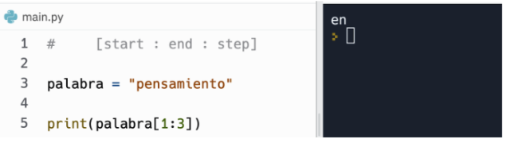
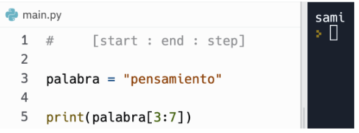
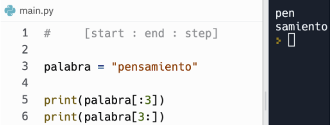
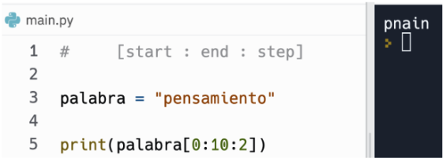
Cuando usamos la función input, el valor que devuelve es siempre una cadena. Esto es porque el usuario puede ingresar cualquier cosa, y no sabemos qué tipo de dato es.
Por ejemplo, si le pedimos al usuario que ingrese un número, el usuario puede ingresar un número entero, un número de punto flotante, un número complejo, o incluso un texto. Entonces, el valor que devuelve input es siempre una cadena, y nosotros tenemos que transformarla al tipo de dato que necesitemos.
Por ejemplo:
edad = input("Indique su edad:")
print("Su edad es:", edad_nueva)Existen muchas formas de concatenar variables con texto.
+: "Su edad es: " + edadfstring: f"Su edad es: {edad}",: print("Su edad es:", edad)La forma más recomendada es la segunda, usando fstring. Pero dependerá de cada caso.
El problema es que, si bien nuestro código anterior funciona, no podemos operar edad como si fuese un número, porque es un string.
El siguiente código va a fallar:
edad = input("Indique su edad:")
edad_nueva = edad + 1
print("Edad siguiente:", edad_nueva)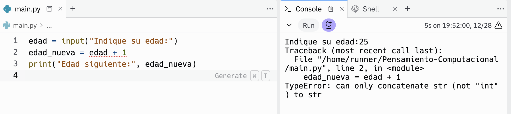
Como vemos, la consola nos arroja un error, o en términos simples decimos que “explotó”.
Los errores son información que nos da la consola para que podamos corregir nuestro código.
En este caso, nos dice que no se puede concatenar un string con un int.
¿Por qué nos dice eso? Porque edad es un string: "25", y estamos tratando de sumarle 1, que es un int: 1.
Para poder operar con edad como si fuese un número, tenemos que transformarla a un número. Esto se llama castear.
Para castear un valor a un tipo de dato, usamos el nombre del tipo de dato, seguido de paréntesis y el valor que queremos castear.
int("25")De esta forma, podemos modificar nuestro código anterior:
edad = int(input("Indique su edad:")) # Le agregamos int
edad_nueva = edad + 1
print("Edad siguiente:", edad_nueva)Y obtenemos un código que funciona correctamente.
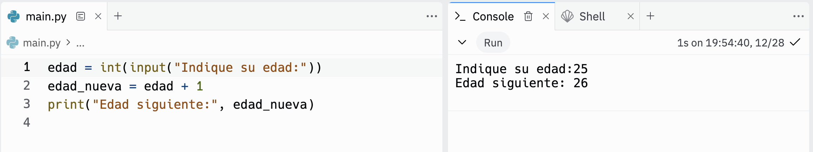
De esta forma, podemos castear a varios tipos de datos:
numero_entero = int(input("Ingrese un número"))
punto_flotante = float(input("Ingrese un número"))
punto_flotante2 = float(numero_entero)
numero_en_str = str(numero_entero)Ejemplo:
nombre_menor = input('Ingresá el nombre de un conocido/a:')
edad_menor = int(input(f'Ingresá la edad de { nombre_menor } '))
nombre_mayor = input(f'Cómo se llama el hermano/a mayor de {nombre_menor}? ')
diferencia = int(input(f'Cuántos años más grande es {nombre_mayor}? '))
edad_mayor = edad_menor + diferencia
print(nombre_menor,'tiene',edad_menor,'años')
print(nombre_mayor,'es mayor y tiene', edad_mayor, 'años')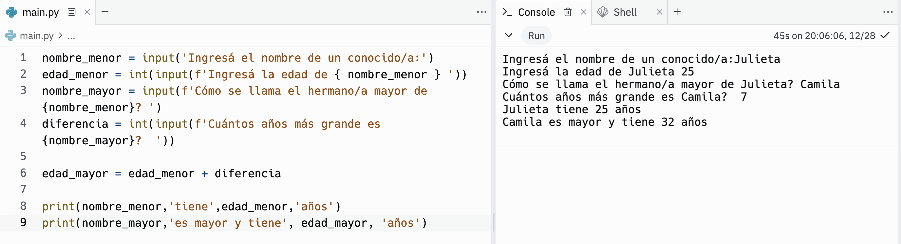
Te recomendamos que te animes a probar estas funciones, para ver qué hacen y terminar de entenderlas.
| Función | Definición | Ejemplo de uso |
|---|---|---|
print() |
Imprime un mensaje o valor en la consola | print("Hello, world!") |
input() |
Lee una entrada de texto desde el usuario | name = input("Enter your name: ") |
abs() |
Devuelve el valor absoluto de un número | abs(-5) |
round() |
Redondea un número al entero más cercano | round(3.7) |
int() |
Convierte un valor en un entero | x = int("5") |
float() |
Convierte un valor en un número de punto flotante | y = float("3.14") |
str() |
Convierte un valor en una cadena de texto | message = str(42) |
bool() |
Convierte un valor en un booleano | is_valid = bool(1) |
len() |
Devuelve la longitud (número de elementos) de un objeto | length = len("Hello") |
max() |
Devuelve el valor máximo entre varios elementos o una secuencia | max(4, 9, 2) |
min() |
Devuelve el valor mínimo entre varios elementos o una secuencia | min(4, 9, 2) |
pow() |
Calcula la potencia de un número | result = pow(2, 3) |
range() |
Genera una secuencia de números | numbers = range(1, 5) |
type() |
Devuelve el tipo de un objeto | data_type = type("Hello") |
round() |
Redondea un número a un número de decimales específico | rounded_num = round(3.14159, 2) |
isinstance() |
Verifica si un objeto es una instancia de una clase específica | is_instance = isinstance(5, int) |
replace() |
Reemplaza todas las apariciones de un substring por otro | text = "Hello, World!"new_text = text.replace("Hello", "Hi") |
eval(<expr>) |
Evalúa una expresión | eval("2 + 2") |